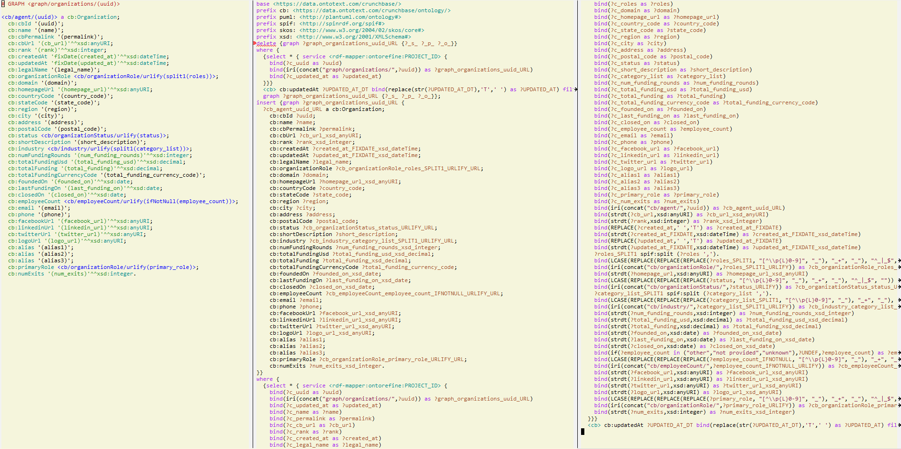

RDF by Example: rdfpuml for True RDF Diagrams, rdf2rml for R2RML Generation
Table of Contents
Introduction
See these publications:
- RDF by Example: rdfpuml for True RDF Diagrams, rdf2rml for R2RML Generation. Vladimir Alexiev. In Semantic Web in Libraries 2016 (SWIB 16), Bonn, Germany, November 2016: Presentation, HTML, PDF, Video
- Generation of Declarative Transformations from Semantic Models. Vladimir Alexiev. In European Data Conference on Reference Data and Semantics (ENDORSE 2023), Mar 2023: paper, presentation, video
RDF is a graph data model, so the best way to understand RDF data schemas (ontologies, application profiles, RDF shapes) is with a diagram. Many RDF visualization tools exist, but they either focus on large graphs (where the details are not easily visible), or the visualization results are not satisfactory, or manual tweaking of the diagrams is required.
- rdfpuml makes true diagrams directly from Turtle examples using PlantUML and GraphViz.
Diagram readability is of prime concern, and rdfpuml introduces various diagram control mechanisms using triples in the
puml:namespace. Special attention is paid to inlining and visualizing various Reification mechanisms (described with PRV). We give examples from Getty CONA, Getty Museum, AAC (mappings of museum data to CIDOC CRM), Multisensor (NIF and FrameNet), EHRI (Holocaust Research into Jewish social networks), Duraspace (Portland Common Data Model for holding metadata in institutional repositories), Video annotation.
If the example instances include embedded source field names, they can describe a mapping precisely. I've implemented a few more tools to generate transformations:
- rdf2rml generates R2RML transformations for RDBMS tables or SQL queries. Compared to R2RML, this saves about 15x in complexity and is competitive with the dedicated DSL YARRML
- rdf2sparql generates OntoRefine or TARQL transformations from CSV/TSV
that take the form of SPARQL UPDATE (for direct GraphDB loading)
or CONSTRUCT (for conversion to RDF).
(Subsumes two deprecated tools
rdf2tarqlandrdf2ontorefine)
See http://x.com/hashtag/rdfpuml for news, diagrams and announcements.
License and Citation
This work is covered by the Artistic-2.0 license.
If you use this software, please cite it as shown above.
- Github shows a link "About> Cite this repository" (see about-citation-files)
- CITATION.cff describes both the software and the above publications. It's a YAML CFF file, see https://citation-file-format.github.io/
- CITATION.bib describes only the above publications. It's a bibtex file
Documentation
- rdfpuml.md or rdfpuml.html
- rdf2rml.md or rdf2rml.html
- rdf2sparql.md or rdf2sparql.html (subsumes
rdf2tarqlandrdf2ontorefine)
rdfpuml shots
Everyone likes screenshots!
- There are some shots that illustrate each feature in the documentation (rdfpuml.md or rdfpuml.html).
- There are more shots in individual tests in folder test.
- I'm planning to create a Gallery of all shots in tests
But until I do it, here are a couple of shots.
Shot: Company and Person Info
Information about Sirma Group and Atanas Kiryakov from Refinitiv PermID:

Shot: Complex Class Expressions
Intersections and restrictions, represented using blank nodes and rdf:List:

Shot: CIDOC CRM and Reification
The tool can depict reification using rdf:Statement and various other constructs, in this case crm:E17_Type_Assignment:

Shot: Arrow Styles

Shot: Unicode and Links
Unicode (actual) and semantic URL links for each node and property (idea). "Zmrzlina" is Czech for "icecream" and may have the highest concentration of consonants in the world:

rdf2sparql shots
Declarative model (left) vs generated SPARQL Update for OntoRefine (right two):

Related Work
Software:
- Matjaz Rihtar (2018). https://github.com/mrihtar/rdfgraph:
inspired by
rdfpuml, written in Python 2.7, uses Redland'slibrdflibrary. I worked with Matjaz in the euBusinessGraph project.
The following papers use or mention this software:
- Ademar Crotti (2019). A Jigsaw Puzzle Metaphor for Representing Linked Data Mappings. PhD Thesis, Knowledge and Data Engineering Group (KDEG), Trinity College, Dublin, Ireland
- C. Debruyne, D. Lewis, D. O’Sullivan (October 2018). Generating Executable Mappings from RDF Data Cube Data Structure Definitions. On the Move to Meaningful Internet Systems" (OTM 2018). LNCS vol 11230. DOI 10.1007/978-3-030-02671-4_21
- L. Zhuhadar, M. Ciampa (2017). Leveraging learning innovations in cognitive computing with massive data sets: Using the offshore Panama papers leak to discover patterns. Computers in Human Behavior. doi:10.1016/j.chb.2017.12.013
- V. Alexiev (2018). Museum Linked Open Data: Ontologies, Datasets, Projects (invited report). In Digital Presentation and Preservation of Cultural and Scientific Heritage (DIPP 2018). Volume 8, pages 19-50. Burgas, Bulgaria, September 2018
- V. Alexiev, A. Kiryakov, P. Tarkalanov (2017) euBusinessGraph: Company and economic data for innovative products and services. 13th International Conference on Semantic Systems (Semantics 2017)
- V. Alexiev, P. Tarkalanov, N. Georgiev, L. Pavlova (2020). Bulgarian Icons in Wikidata and EDM. Digital Presentation and Preservation of Cultural and Scientific Heritage (DIPP 2020).
Installation
Checkout this repo and add rdf2rml/bin to your path.
Install the following prerequisites:
- both tools: Perl. Tested with version 5.22 on Windows (cygwin and Strawberry).
- rdfpuml:
- GraphViz
- PlantUML. You need a recent version for new features like arrow length and color. I'm currently running 1.2018.10beta7. See in particular plantuml class diagrams.
- Perl modules: use
cpanorcpanmto install them:RDF::Trine RDF::Query Encode FindBin Carp::Always Slurp RDF::Prefixes::Curie. This is my own module located in ./lib, and rdfpuml needsFindBinto locate it.
- rdf2rml:
- Apache Jena:
riot,update. Tested with version 3.1.0 of 2016-05-10. - cat, grep, rm
- Apache Jena:
Docker Image
If you prefer to work with Docker so you don't need to install software manually, you can use this rdf2rml image from the public Nexus (Docker Registry) of Ontotext. To run it, use:
docker run -v <directory>:/files --rm docker-registry.ontotext.com/rdf2rml:latest`
Where <directory> is the local directory holding your .ttl files.
It was made on 31 May 2023 and uses the following versions:
Note: pull request 7 of 17 Sep 2019 by Jem Rayfield (@jazzyray)
dockerizes the installation, and makes extra changes related to input/output and configuration.
However, it has not been merged yet
Debian Repo
Jonas Smedegaard (@jonassmedegaard, dr at jones fullstop dk) has volunteered for some of the tasks below.
His development is at https://salsa.debian.org/debian/rdf2rml/branches.
To adopt changes, do something like this.
To merge all commits in the
salsa/developbranch:cd rdf2rml # i.e. your local clone of your Github project git remote add salsa https://salsa.debian.org/debian/rdf2rml.git git fetch salsa git merge salsa/develop
To adopt only single commits from the
salsa/developbranch, issueremoteandfetchas above, then issue:git cherry-pick $commit1 $commit2 $commit3
ToDo Tasks
See CHANGELOG.org for implemented features and fixes.
Help needed for the following tasks. Post bugs and enhancement requests to this repo!
Near-term
Modularize and Package Better
Regression Tests
sortis added at various places to make the tool more deterministic, i.e. independent of order of RDF statements in the input file. However, this will interfere with the ability to control the layout, especially of disconnected components (see layout_new_line)- Some regression tests are added.
rdf2rml: disentangle inverse edge
In the case Y-P-X described above:
- Also need to record
?y puml:property ?pso this prop name can be added to ?y's subject map - When making ?map, take
puml:propertyinto account - But ?map is made many times, and copy-paste is no good…
- Also, this should be done in some cases but not others…
- So it's better to record
?y puml:map ?map…
Release on CPAN
Add Unicode tests
Add ttl with non-ASCII chars: Accented, Cyrillic, French, etc.
- Accented:
"Rudolf Mössbauer"in ./test/TRR/societyMember.ttl
Prefixes
Allow specifying the prefixes file
Eliminate Curie.pm
./lib/RDF/Prefixes/Curie.pm remembers @base and uses that for URL shortening.
Once perlrdf#131 is fixed, eliminate this dependency (local module)
Remember prefixes from input file
rdfpuml shortens URLs using prefixes only from prefixes.ttl, but should also use prefixes defined in the individual input file.
Support more RDF Formats
Now it only supports Turtle, because it concatenates prefixes.ttl to the main file.
If it can collect all prefixes from RDF files, such concatenation won't be needed
Batch Processing
Issue #1: plantuml is slow to start up, so we'd like to process a bunch of puml files at once.
The best way is to have a smarter script or Makefile that uses the following http://plantuml.com/command-line features:
- Keep the intermediate
pumlfiles (the currentMakefiledoesn't preserve them) - Run
plantumlon a whole folder (with-r[ecurse]it can even recurse through subfolders) - Use
-checkmetadatato skippngfiles that don't need to be regenerated. (The wholepumltext is stored in thepng, soplantumlcan quickly check that there are no changes) - The
Makefileshould startplantumlonly once, if some of thepumlfiles is newer than its respectivepngfile
"Manual" Batching
Before I discovered the -checkmetadata option,
I had the idea that rdfpuml could put several diagrams in one puml file:
@startuml file1.png # made from file1.ttl @enduml @startuml file2.png # made from file2.ttl @enduml
However, this interferes with make processing that regenerates only png for changed ttl files,
and makes things less modular overall.
Mid-Term
Upgrade to use Attean
Trine (Perl RDF) is end of life. Attean is the new generation
Integrate in Emacs org-mode
Write Turtle, see diagram (easy to do)
Node colors, icons, tooltips
See ./ideas
More arrow types and styles
- See
arrows arrows-2from https://github.com/anoff/blog/tree/master/static/assets/plantuml/diagrams:


- Arrow styles and colors (bold, dashed etc): https://mrhaki.blogspot.com/2016/12/plantuml-pleasantness-get-plantuml.html
plantuml -patternregexes:
dotted|dashed|plain|bold|hidden|norank|single|thickness
Extra Layout Options
Local layout options are described in Help on Layout:
- "hidden" makes a constraint between two nodes, but does not draw the link (
rdfpumlalready implements this) - norank ignores a link for layout purposes (same as graphviz
constraint=false) - "together" groups classes as if they were in the same package (i.e. puts them in a graphviz cluster)
Global options include (eg see this diagram):
skinparam Linetype ortho skinparam NodeSep 80 skinparam RankSep 80 skinparam Padding 5 skinparam MinClassWidth 40 skinparam SameClassWidth true
And there are a lot more undocumented features: https://forum.plantuml.net/7095
Custom Reification
Ability to describe custom reification situations using the Property Reification Vocabulary (PRV)
Use MindMap/WBS for Hierarchies
Plantuml now has MindMap and WBS (or OBS) diagrams that use a simple bulleted syntax to draw hierarchies.
It would be nice to use this to draw hierarchies of individuals, in particular taxonomies.
Here are examples of the two styles:
Long-Term
rdf2soml to Generate Semantic Object Models
A new tool rdf2soml to generate Ontotext Platform SOML from RDF examples.
What's missing? Most importantly: property cardinality and virtual inverses.
PlantUML can show arrow cardinalities, and this simple and natural PlantUML code:
X "0:1" -left-> "1:m" Y : prop/\ninvProp
Is depicted as follows:

We have two options how to express this in triples:
Cardinality With RDF*
##### model triples :X :prop :Y. ##### puml triples << :X :prop :Y >> puml:arrow puml:left; # direction puml:min 1; puml:max puml:inf; # cardinality puml:inverseAlias [puml:min 0; puml:max 1; puml:name "invProp"]. # virtual inverse
- Pros: very natural
- Cons:
- Perl RDF doesn't support RDF*, and few editors support it either.
- Annotating a triple does not assert it, so we need to assert it as well
Cardinality With Blank Node
##### model triples :X :prop :Y. ##### puml triples :X puml:left :Y. # direction :X :prop [ # a puml:Cardinality; # may need this marker class to skip the node from the diagram puml:min 1; puml:max puml:inf; # cardinality puml:object :Y; # only needed if X has several relations "prop" and they need different annotations puml:inverseAlias [puml:min 0; puml:max 1; puml:name "invProp"] # virtual inverse ].
rdf2shape to Describe & Generate RDF Shapes
Visualize RDF Shapes (SHACL and ShEx)
Issue #8: discussion with Thomas Francart of Sparna
I developed this SHACL to PlantUML converter, in Java, based on TopQuadrant SHACL lib, and the result is at https://shacl-play.sparna.fr/play/draw and code at https://github.com/sparna-git/shacl-play/tree/master/shacl-diagram
I don't have a strong opinion on the example you provide, an alternative idea that comes to my mind is
:node1 :link [ rdf:value :node2; puml:min 1 ; puml:max 2 ; ]
But this changes the structure of the example graph itself, which might not be convenient
Generate transformations for other than relational sources
R2RML works great for RDBMS, but how about other sources? Extend rdf2rml to generate: